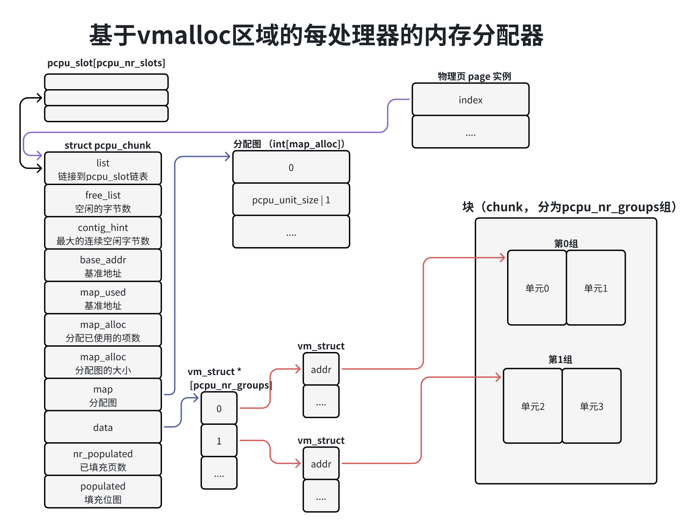
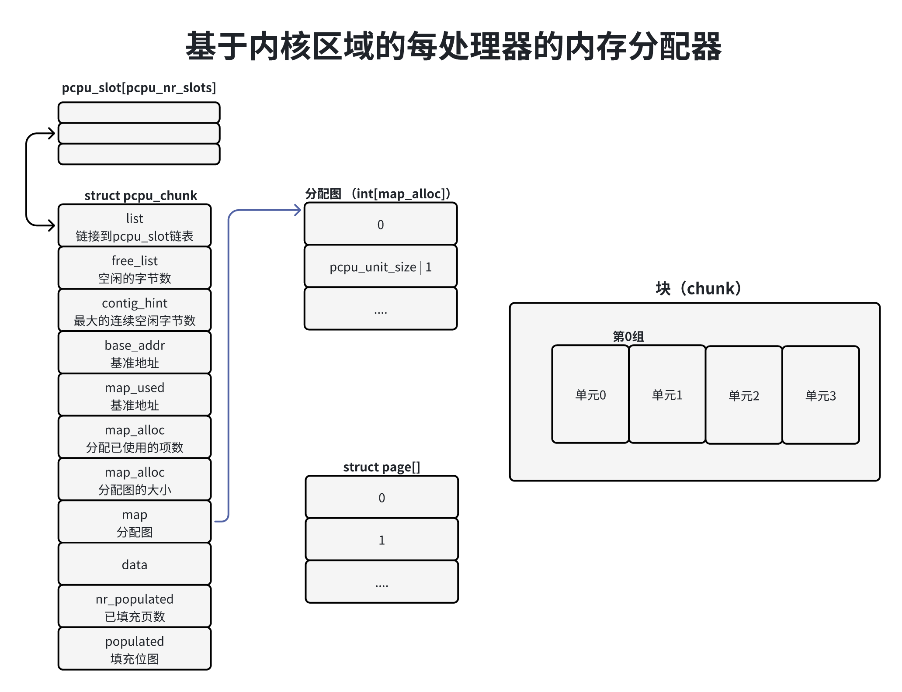
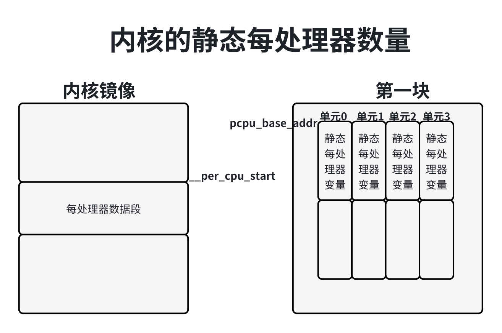
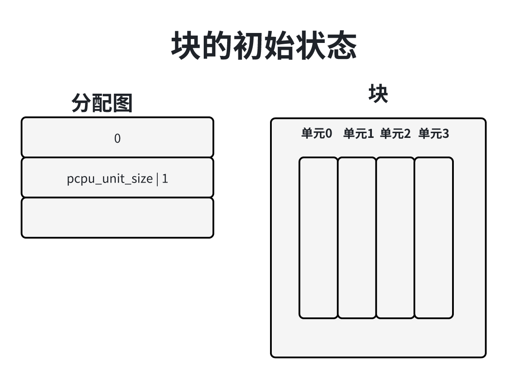
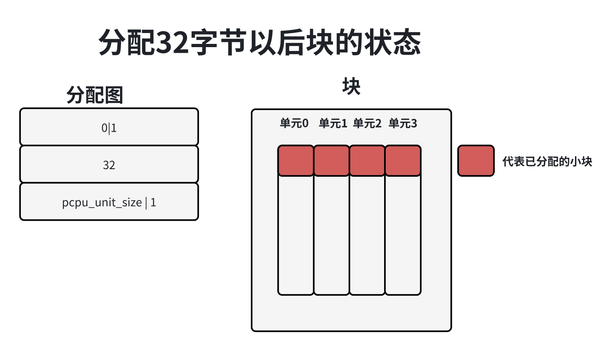

在多处理器系统中，每处理器变量为每个处理器生成一个变量副本，每个处理器访问自己的副本，从而避免处理器之间的互斥和处理器缓存之间的同步，提高了程序的执行速度。
每处理器变量分为静态和动态两种。
使用宏“DEFINE_PER_CPU(type, name)”，定义普通的静态每处理器变量，使用宏“DECLARE_PER_CPU(type, name)”声明普通的静态每处理器变量。
把宏“DEFINE_PER_CPU(type, name)”，展开以后是：
1__attribute__((section(".data..percpu"))) __typeof__(type) name可以看出，普通的静态每处理器变量存放在”.data.percpu“节（每处理器数据节）中。
定义静态每处理器变量的其他变体如下：
1）使用宏”DEFINE_PER_CPU_FIRST(type, name)“定义必须在每处理器变量集合中最先出现的每处理器变量。
2）使用宏”DEFINE_PER_CPU_SHARED_ALIGHED(type, name)“定义和处理器缓存行对齐的每处理器变量，仅仅在SMP系统中需要和处理器缓存行对齐。
3）使用宏”DEFINE_PER_CPU_ALIGNED(type, name)“定义和处理器缓存行对齐的每处理器变量，不管是不是SMP系统，都需要和处理器缓存行对齐。
4）使用宏”DEFINE_PER_CPU_PAGE_ALIGNED(type, name)“定义和页长度对齐的每处理器变量。
5）使用宏”DEFINE_PER_CPU_READ_MOSTLY(type, name)“定义以读为主的每处理器变量。
如果想要静态每处理器变量可以被其他内核模块引用，需要到处符号表，具体如下。
1）如果允许任何内核模块引用，使用宏”EXPORT_PER_CPU_SYMBOL(var)“把静态每处理器变量到处到符合表中。
2）如果只允许使用GPL许可的内核模块引用，使用宏”EXPORT_PER_CPU_SYMBOL_GPL(var)“把静态每处理器到处到符号表。
为动态每处理器变量分配内存的函数如下。
1）使用函数__alloc_percpu_gfp为动态每处理器变量分配内存。
11void __percpu *__alloc_percpu_gfp(size_t size , size_t align, gfp_t gfp);参数size是长度，参数align是对齐值，参数gfp是传给页分配器的分配标志位。
2）宏alloc_percpu_gfp(type, gfp)是函数__alloc_percpu_gfp的简化形式，参数size取”sizeof(type)“，参数align取”__alignof__(type)“，即数据类型type的对齐值。
3）函数__aloc_percpu是函数__alloc_percpu_gfp的简化形式，参数gfp取GFP_KERNEL。
11void __percpu *__alloc_percpu(size_t size, size_t align);4）宏alloc_percpu(type)是函数__alloc_percpu的简化形式，参数size取”sizeof(type)“，参数align取”__alignof__type(type)“。
最常用的时宏alloc_percpu(type)。
使用函数free_percpu释放动态每处理器变量的内存。
11void free_percpu(void __percpu *__pdata);宏”this_cpu_ptr(ptr)“用来得到当前处理器变量副本的地址，宏”get_cpu_var(var)“用来得到当前处理器变量副本的值。宏”this_cpu_ptr(ptr)“展开以后是：
x1unsigned long __ptt;2
3__ptr = (unsigned long)(ptr);4(typeof(ptr)) (__ptr + per_cpu_offset(raw_smp_processor_id()));可以看出，当前处理器的变量副本的地址等于基准地址加上当前处理器的偏移。
宏”per_cpu_ptr(ptr, cpu)“用来得到指定处理器的变量副本的地址，宏”per_cpu(ptr, cpu)“用来得到指定处理器的变量副本的值。
宏”get_cpu_ptr(var)“禁止内核抢占并且当前处理器的变量副本的值，宏put_cpu_var(var)“开启内核抢占，这两个宏成对使用，确保当前进程在访问当前处理器的变量副本的时候不会被其他进程抢占。
每处理器区域是按块（chunk）分配的，每个块为多个长度相同的单元（unit），每个处理器对应一个单元。在NUMA系统上，把单元按内存节点分组，同一个内存节点的所有处理器对应的单元属于同一个组。
分配块的方法是两种：
1）基于vmalloc区域的快分配。从vmalloc虚拟地址空间分配虚拟内存区域，然后映射到物理页。
2）基于内核内存的快分配。直接从页分配器分配页，使用直接映射的内核虚拟地址空间。
基于vmalloc区域的快分配，适合多处理器系统；基于内核内存的块分配，适合但处理器系统或者处理器没有内存管理单元部件的请款，目前这种分配方式不支持NUMA系统。
多处理器系统默认使用基于vmalloc区域的块分配方式，单处理器系统默认使用基于内核内存的块分配方式。
基于vmalloc区域的每处理器内存分配器的数据结构如下图所示，每个块对应一个pcpu_chunk实例。

成员data指向vm_struct指针数组，vm_struct结构体是不连续页分配器的数据结构，每个组对应的一个vm_struct实例，vm_struct实例的成员addr指向组的其实地址。块以组为单位分配虚拟内存区域，一个组的虚拟地址是连续的，不同组的虚拟地址不一定是连续的。
成员populated是填充位图，记录哪些虚拟页已经映射到物理页；成员nr_populated是已填充页数，记录已经映射的物流业的数量。创建块时，只分配了虚拟内存区域，没有分配每处理器变量时，才分配物理页。物理页的page实例的成员index指向pcpu_chunk实例。
成员map指向分配图，分配图是一个整数数组，用来存放每个小块(block)的偏移和分配状态，成员map_alloc记录分配图的大小，成员map_used记录分配图已使用的项数。
成员free_size记录空闲字节数，成员contig_hint记录最大的连续空闲字节数。
成员base_addr是块的基准地址，一个块的每个组必须满足条件：组的其实地址 = （块的基准地址 + 组的偏移地址）。
成员list用来把块加入块插槽，插槽号是根据空闲字节数算出来的。
基于内核内存的每处理器内存分配器的数据结构如下图所示，和基于vmalloc区域的每处理器内存分配的不同如下：

pcpu_chunk实例的成员data指向age结构体数组。
创建块的时候，分配了物理页，虚拟页直接映射到物理页。
不支持NUMA系统，一个块只有一个组。
一个块中偏移offset、长度为size的区域，是由每个单元中偏移为offset、长度为size的小块（block）组成的。从一个块分配偏移为offset、长度为size的区域，就是从每个单元分配偏移为offset、长度为size的小块。
为每处理器变量分配内存时，返回的虚拟地址是（chunk->base_addr+offset-delta），其中chunk->base_addr是块的基准地址，offset是单元内部的偏移，delta是（pcpu_base_addr - __per_cpu_start），__per_cpu_start是每处理器数据段的起始地址，每处理器的内存分配器在初始化的时候把每处理器数据段复制的第一块的每个单元。
使用宏”this_cpu_ptr(ptr)“访问每处理器变量，ptr是为每处理器变量分配内存时返回的虚拟地址。我们看下宏 ”this_cpu_ptr(ptr)”是怎么得到当前处理器的变量副本的地址：
71this_cpu_ptr(ptr)2// cpu是当前处理器的编号3= ptr + __per_cpu_offset[cpu] 4= ptr + (delta + pcppu_unit_offsets[cpu])5= (ptr + delta) + pcpu_unit_offsets[cpu]6= (chunk-> base_addr + offset) + pcpu_unit_offsets[cpu]7= (chunk-> base_addr + pcpu_unit_offsets[cpu]) + offsetpcpu_unit_offsets[cpu]是处理器对应的单元的偏移，（chunk->base_addr + pcpu_unit_offsets[cpu]）是处理器对应的单元的起始地址，加上单元内部的偏移offset，就是变量副本的地址。
问：为每处理器变量分配内存时，返回的虚拟地址为什么要减去delta？
答：因为宏”this_cpu_ptr(ptr)“在计算变量副本的地址时加上了delta，所以分配内存时返回的虚拟地址要提前减去delta。宏”this_cpu_ptr(ptr)“为什么要加上delta？原因是要照顾内核的静态每处理器变量。
如下图所示，__per_cpu_start是每处理器数据段的其实地址，内核把所有静态每处理器变量放在每处理器数据段，pcpu_base_addr是第一块的基准地址，每处理器内存分配器在初始化时把每处理器数据段复制到第一块的每个单元。

使用宏”this_cpu_ptr(ptr)“访问静态每处理器变量时，ptr是内核镜像的每处理器数据段中的变量的虚拟地址，必须加上第一块的基准地址和每处理器数据段的其实地址的差值，才能得到第一块中变量副本的地址。
分配图是一个整数数组，存放每个小块的偏移和分配状态，每个小块的长度是偶数，偏移是偶数，使用最低位表示小块的分配状态，如果小块分配，那么设置最低位。
假设系统有4个处理器，一个块分为4个单元，块的初始状态如下图所示，分配图使用了两项：第一项存放第一个小块的偏移0，空闲；第二项存放党员的结束标记，偏移是单元长度pcpu_unit_size，最低位被设置。

分配一个长度是32字节的动态每处理器变量以后，快的状态如下图所示，每个单元中偏移为0、长度位32字节的小块被分配出去，分配图使用了三项：第一项存放第一小块的偏移0，已分配；第二项存放第二个小块的偏移32，空闲；第三项存放单元的结束标记，偏移是单元长度pcpu_unit_size，最低位被设置。

分配器根据空闲长度把块组织成链表，把每条链表称为块插槽，插槽的数量是pcpu_nr_slots，根据空闲长度n计算插槽号的方法如下。
1）如果空闲长度小于整数长度，或者最大的连续空闲字节数小于整数长度，那么插槽号是0。
2）如果块全部空闲，即空闲长度等于单元长度，那么取最后一个插槽号，即（pcpu_nr_slots-1）
3）其他情况：插槽号 - fls(n) - 3，并且不能小于1。fls(n)是取n被设置的最高位，例如fls(1)=1，fls(0x80000000)=32，相当于（
101// 位置： mm/percpu.c2
3// 1~15共享相同的插槽4static int __pcpu_size_to_slot(int size)6{7 // size的单位是字节8 int highbit = fls(size);9 return max(highbit - PCPU_SLOT_BASE_SHIFT + 2, 1);10}创建一个块时，需要知道以下参数：
块分为多少组？
每个组的偏移是多少？
每个组的长度是多少？
原子长度是多少？原子长度是对齐值，即组的长度必须是原子长度的整数倍。
单元长度是多少？
块的各种参数是在创建第一个块的时候确定的，第一个块包含了内核的静态每处理器变相，函数pcpu_build_alloc_info计算分组信息和单元长度，算法如下：
流程：start_kernel->setup_per_cpu_ares->pcpu_embed_first_chunk->pcpu_build_alloc_info
静态长度：内核中所有静态变量的长度总和，等于每处理器数据段的结束地址减去起始地址，即（_per_cpu_end - _per_cpu_start）。
保留长度：为动态每处理器变量准备，使用宏PERCPU_DYNAMIC_RESERVE定义，在64位系统中的值是28KB。
size_num = 静态长度 + 保留长度 + 动态长度
最小单元长度：min_unit_size = size_sum，并且不允许小于宏PCPU_MIN_UNIT_SIZE值是32KB。
分配长度：alloc_size = min_unit_size向上对齐的原子长度的整数倍，目前原子长度是页长度。
最大倍数：max = alloc_size / min_unit_size。
根据距离把处理器分组，计算每个处理器的组织好和每个组的处理器数量，实际上是每个内存节点的所有处理器属于同一个组。
单元长度 = alloc_size / 倍数n，现在需要从最大倍数max到最小倍数1中找到一个最优的倍数n：
1）块以组为单位分配虚拟内存区域，必须保证每个组的长度是原子长度的整数倍。
2）浪费的比例必须小于或等于25%，并且浪费的比例是最小的。
倍数n从最大倍数amx递减到最小倍数1{
如果alloc_size不能整数除倍数n，或者alloc_size/n不是页产股的整数倍，那么倍数n不合适。
把每个组的单元数量向上对齐到 n，计算单元总数units。
如果（因为对齐增加的单元数量/对齐钱的单元总数）>
，就是浪费的比例超过了25%，那么倍数n不合适。 如果单元总数比以前算出的单元总数last_units大，那么退出循环。
记录单元总数last_units = units。
记录最优倍数best = n
}
best是最优的倍数，单元长度 = alloc_size / best
设置组的参数如下：
1）每个组的单元数量：向上对齐到best的整数倍，确保每个组的虚拟内存区域对齐到原子长度、
2）计算每个组的偏移：第n组的偏移等于（第0组到n-1组的单元总数 * 单元长度），单元数量包括把组长度和原子长度对齐而增加的单元。
函数pcpu_setup_first_chunk根据传入的结构体pcpu_alloc_info和基准地址初始化第一块，并且设置块的参数：
1）全局变量pcpu_nr_groups：存放组的数量。
2）全局数组pcpu_nr_offsets：存放每个组的偏移，pcpu_group_offsets[n]第n组的偏移。
3）全局数组pcpu_group_sizes：存放每个组的长度，pcpu_group_sizes[n]是第n组的长度。
4）全局数组pcpu_unit_map：存放处理器编号到单元编号的映射关系，pcpu_unit_map[n]是处理器n的单元编号。
5）全局数组pcpu_unit_offsets存放每个单元的偏移，pcpu_unit_offsets[n]是单元n的偏移。
6）全局变量pcpu_nr_units时块的单元数量，不包含因为把组长度和原子长度对齐而增加的单元。
7）全局变量pcpu_unit_pages时单元长度，单位是页。
8）全局变量pcpu_unit_size时单元长度，单位是字节。
9）全局变量pcpu_atom_size时原子长度，即对齐值，每个组的长度必须是原子长度的整数倍。
10）全局变量pcpu_base_addr时基准地址，取第一块的基准地址。
函数setup_per_cpu_areas设置全局数组__per_cpu_offset，该数组存放每个处理器对应的单元偏移。
21delta = (unsigned long )pcpu_base_addr - (unsigned long )_per_cpu_start;2__per_cpu_offset[cpu] = delta + pcpu_unit_offsets[cpu];pcpu_base_addr是第一块的基准地址，__per_cpu_start是内核中每处理器数据段的其实地址，delta是这两个地址的差值。
pcpu_unit_offsets是相对块基准地址的偏移，而__per_cpu_offset是相对内核中每处理器数据段的其实地址的偏移。
已经有全局数组pcpu_unit_offsets，为什么还要定义全局数组__per_cpu_offset，为什么还要定义全局数组__per_cpu_offset呢？主要是为了照顾静态每处理器变量：使用宏“this_cpu_ptr(ptr)”访问静态每处理器变量，this_cpu_ptr(ptr) = ptr +__per_cpu_offset[cpu]，ptr是内核的每处理器数据段中变量的地址，需要加上delta以转换成第一块中的变量副本地址。
为每处理器分配内存的时候，返回的地址是（chunk->base_addr + offset - delta），提前减去了delta，其中chunk->base_addr是块的基准地址，offset是单元内部的偏移。
函数pcpu_create_chunk负责创建块，以基于vmalloc区域的块分配方式为例说明执行过程。
1）调用函数pcpu_alloc_chunk，分配pcpu_chunk实例并且初始化；
2）调用函数pcpu_get_vm_areas，负责从vmalloc虚拟地址空间分配虚拟内存区域。
3）块的基准地址等于（第0组的其实地址 - 第0组的偏移）。
函数pcpu_get_vm_areas的输入参数：
1）pcpu_group_offsets：每个组的偏移；
2）pcpu_group_sizes：每个组的长度;
3）pcpu_nr_groups：组的数量；
4）pcpu_atom_size：原子长度；
需要找到一个基准值base，第n组的虚拟内存区域是[base + pcpu_group_offsets[n], base + pcpu_group_offsets[n] + pcpu_group_sizesp[n]]，基准值必须满足条件：基准值和原子长度对齐，并且每个组的虚拟内存是空闲的。
每处理器分配内存的算法如下：
把申请长度对齐到偶数
根据申请长度计算出插槽号n
遍历从插槽号n到最大插槽号pcpu_nr_slots的每个插槽{
遍历插槽中的每个块{
如果申请长度 > 最大连续空闲字节数， 不能从这个块分配内存。
遍历块的分配图，如果有一个空闲小块的长度或等于申请长度，处理如下：
如果小块的长度 > 申请长度，先把合格小块分为2个小块
更新分配图。
更新空心字节数和最大连续空闲字节数
根据空闲字节数计算新的插槽号，把块移到新的插槽中
}
}
如果分配失败，处理如下：
如果是原子分配{
向全局工作队列添加1个工作项pcpu_balance_work，异步创建新的块
} 否则{
如果最后一个插槽是空的，那么创建新的块，然后重新分配内存
}
如果分配成功，处理如下：
如果是原子分配{
如果空闲的已映射到物理页的虚拟页的数量小于PCPU_EMPTY_POP_PAGES_LOW（值为2），那么向全局工作队列添加1个工作项pcpu_balance_work，异步分配物理页。
}否则{
在分配出去的区域中，对于没有映射到的物理页的虚拟页，分配物理页，在讷河的页表中把虚拟页映射到物理页。
}
把分配出去的区域清零：
返回地址（chunk->base_addr + offset - delta），其中chunk->base_addr是块的基准地址，offset是单元内部的偏移，delta是（pcpu_base_addr - __per_cpu_start），即第一块的基准地址和内核中每处理器数据段的其实地址差值。